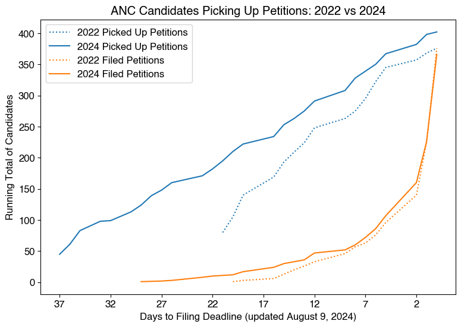

| Candidate Status | Active | Inactive |
|---|---|---|
| On the Ballot | 371 | 0 |
| Write-In Candidate | 64 | 0 |
| Withdrew | 0 | 27 |
| Did Not Qualify for Ballot | 0 | 49 |
| Total | 435 | 76 |
These counts include both candidates on the ballot and write-in candidates who fill out the OpenANC Candidate Declaration Form.
| Election Status | Count of Districts | Percentage |
|---|---|---|
| No Candidates Running | 26 | 7.5% |
| Uncontested (1 candidate) | 220 | 63.8% |
| Contested (2 or more candidates) | 99 | 28.7% |
| Total | 345 | 100.0% |
| Number of Candidates | Count of Districts | Percentage |
|---|---|---|
| 0 | 26 | 7.5% |
| 1 | 220 | 63.8% |
| 2 | 84 | 24.3% |
| 3 | 14 | 4.1% |
| 5 | 1 | 0.3% |
| 0 candidates | 1 candidate | 2 candidates | 3 candidates | 5 candidates | Total | Percent Unfilled | |
|---|---|---|---|---|---|---|---|
| Ward 1 | 4 | 27 | 10 | 1 | 0 | 42 | 9.5% |
| Ward 2 | 3 | 34 | 8 | 1 | 0 | 46 | 6.5% |
| Ward 3 | 1 | 30 | 10 | 2 | 0 | 43 | 2.3% |
| Ward 4 | 2 | 29 | 11 | 0 | 0 | 42 | 4.8% |
| Ward 5 | 2 | 29 | 14 | 0 | 0 | 45 | 4.4% |
| Ward 6 | 3 | 33 | 6 | 0 | 0 | 42 | 7.1% |
| Ward 7 | 5 | 25 | 7 | 5 | 1 | 43 | 11.6% |
| Ward 8 | 6 | 13 | 18 | 5 | 0 | 42 | 14.3% |
| Total | 26 | 220 | 84 | 14 | 1 | 345 | 7.5% |
| 0 candidates | 1 candidate | 2 candidates | 3 candidates | 5 candidates | Total | Percent Unfilled | |
|---|---|---|---|---|---|---|---|
| ANC 1A | 1 | 7 | 2 | 0 | 0 | 10 | 10.0% |
| ANC 1B | 1 | 5 | 2 | 1 | 0 | 9 | 11.1% |
| ANC 1C | 1 | 5 | 3 | 0 | 0 | 9 | 11.1% |
| ANC 1D | 0 | 6 | 1 | 0 | 0 | 7 | 0.0% |
| ANC 1E | 1 | 4 | 2 | 0 | 0 | 7 | 14.3% |
| ANC 2A | 1 | 5 | 3 | 0 | 0 | 9 | 11.1% |
| ANC 2B | 0 | 8 | 1 | 0 | 0 | 9 | 0.0% |
| ANC 2C | 1 | 2 | 1 | 0 | 0 | 4 | 25.0% |
| ANC 2D | 0 | 2 | 0 | 0 | 0 | 2 | 0.0% |
| ANC 2E | 1 | 6 | 1 | 0 | 0 | 8 | 12.5% |
| ANC 2F | 0 | 8 | 0 | 0 | 0 | 8 | 0.0% |
| ANC 2G | 0 | 3 | 2 | 1 | 0 | 6 | 0.0% |
| ANC 3/4G | 0 | 5 | 2 | 0 | 0 | 7 | 0.0% |
| ANC 3A | 0 | 5 | 0 | 0 | 0 | 5 | 0.0% |
| ANC 3B | 1 | 4 | 0 | 1 | 0 | 6 | 16.7% |
| ANC 3C | 0 | 3 | 5 | 0 | 0 | 8 | 0.0% |
| ANC 3D | 0 | 6 | 1 | 0 | 0 | 7 | 0.0% |
| ANC 3E | 0 | 6 | 2 | 0 | 0 | 8 | 0.0% |
| ANC 3F | 0 | 4 | 1 | 1 | 0 | 6 | 0.0% |
| ANC 4A | 2 | 2 | 3 | 0 | 0 | 7 | 28.6% |
| ANC 4B | 0 | 8 | 2 | 0 | 0 | 10 | 0.0% |
| ANC 4C | 0 | 5 | 2 | 0 | 0 | 7 | 0.0% |
| ANC 4D | 0 | 8 | 0 | 0 | 0 | 8 | 0.0% |
| ANC 4E | 0 | 3 | 3 | 0 | 0 | 6 | 0.0% |
| ANC 5A | 2 | 4 | 3 | 0 | 0 | 9 | 22.2% |
| ANC 5B | 0 | 4 | 3 | 0 | 0 | 7 | 0.0% |
| ANC 5C | 0 | 6 | 1 | 0 | 0 | 7 | 0.0% |
| ANC 5D | 0 | 8 | 1 | 0 | 0 | 9 | 0.0% |
| ANC 5E | 0 | 4 | 2 | 0 | 0 | 6 | 0.0% |
| ANC 5F | 0 | 3 | 4 | 0 | 0 | 7 | 0.0% |
| ANC 6/8F | 0 | 2 | 3 | 0 | 0 | 5 | 0.0% |
| ANC 6A | 0 | 4 | 3 | 0 | 0 | 7 | 0.0% |
| ANC 6B | 0 | 9 | 0 | 0 | 0 | 9 | 0.0% |
| ANC 6C | 0 | 7 | 0 | 0 | 0 | 7 | 0.0% |
| ANC 6D | 1 | 6 | 1 | 0 | 0 | 8 | 12.5% |
| ANC 6E | 2 | 6 | 1 | 0 | 0 | 9 | 22.2% |
| ANC 7B | 0 | 7 | 1 | 1 | 0 | 9 | 0.0% |
| ANC 7C | 1 | 4 | 3 | 1 | 0 | 9 | 11.1% |
| ANC 7D | 2 | 6 | 1 | 1 | 0 | 10 | 20.0% |
| ANC 7E | 1 | 5 | 1 | 0 | 0 | 7 | 14.3% |
| ANC 7F | 1 | 3 | 1 | 2 | 1 | 8 | 12.5% |
| ANC 8A | 0 | 4 | 2 | 1 | 0 | 7 | 0.0% |
| ANC 8B | 2 | 1 | 4 | 0 | 0 | 7 | 28.6% |
| ANC 8C | 0 | 1 | 6 | 1 | 0 | 8 | 0.0% |
| ANC 8D | 2 | 3 | 2 | 1 | 0 | 8 | 25.0% |
| ANC 8E | 2 | 3 | 2 | 2 | 0 | 9 | 22.2% |
| Total | 26 | 220 | 84 | 14 | 1 | 345 | 7.5% |
In order to conduct business, ANCs need at least 50% of its districts to be represented by a commissioner. In this table, ANCs where 50% or more of the districts do not have a candidate are highlighed.
Some candidates who have filled out the OpenANC Candidate Declaration form have not yet picked up petitions from DCBOE, so they do not have a pickup date yet, and thus the total number of candidates here does not match the actual number of candidates. Excludes withdrawn candidates.
| Candidates Picked Up | Candidates Filed | ||||
|---|---|---|---|---|---|
| Date | Count | Running Total | Count | Running Total | Percentage Filed |
| 2022-07-20 | 80 | 80 | 0 | 0 | 0.0% |
| 2022-07-21 | 25 | 105 | 1 | 1 | 1.0% |
| 2022-07-22 | 35 | 140 | 2 | 3 | 2.1% |
| 2022-07-25 | 29 | 169 | 3 | 6 | 3.6% |
| 2022-07-26 | 24 | 193 | 7 | 13 | 6.7% |
| 2022-07-27 | 16 | 209 | 7 | 20 | 9.6% |
| 2022-07-28 | 15 | 224 | 6 | 26 | 11.6% |
| 2022-07-29 | 24 | 248 | 7 | 33 | 13.3% |
| 2022-08-01 | 15 | 263 | 13 | 46 | 17.5% |
| 2022-08-02 | 12 | 275 | 11 | 57 | 20.7% |
| 2022-08-03 | 20 | 295 | 6 | 63 | 21.4% |
| 2022-08-04 | 27 | 322 | 13 | 76 | 23.6% |
| 2022-08-05 | 23 | 345 | 20 | 96 | 27.8% |
| 2022-08-08 | 12 | 357 | 44 | 140 | 39.2% |
| 2022-08-09 | 11 | 368 | 85 | 225 | 61.1% |
| 2022-08-10 | 8 | 376 | 151 | 376 | 100.0% |

Counts of currently-serving commissioners, on the old map used in the 2020 election.
| Single Member Districts | Current Vacancies |
|---|---|
| 296 | 12 |
Last updated: December 3, 2022